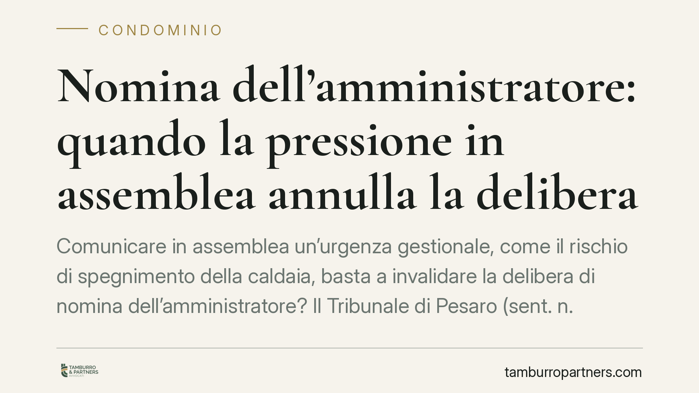

Nomina dell'amministratore: quando la pressione in assemblea annulla la delibera
Comunicare in assemblea un'urgenza gestionale, come il rischio di spegnimento della caldaia, basta a invalidare la delibera di nomina dell'amministratore? Il Tribunale di Pesaro (sent. n. 305/2026) dice di no: i vizi del consenso incidono sul singolo voto e devono superare la prova di resistenza. Vediamo cosa cambia per i condomini e quando una pressione diventa davvero violenza morale.

Il caso
Alcuni condomini avevano impugnato la delibera di nomina dell'amministratore sostenendo che il voto fosse stato estorto con la minaccia. In assemblea, infatti, era stato prospettato il rischio concreto di spegnimento della caldaia condominiale in assenza di una gestione attiva. Secondo i ricorrenti, quella comunicazione avrebbe costituito una pressione psicologica tale da viziare il consenso espresso.
Il Tribunale di Pesaro, con la sentenza n. 305/2026, ha respinto la tesi e ha fissato alcuni principi utili a chiunque viva in un condominio.
Inquadramento normativo
La delibera assembleare è un atto collegiale, ma si forma attraverso la somma dei voti dei singoli condomini. Per questo i cosiddetti "vizi del consenso" - errore, violenza, dolo - non si valutano sulla delibera in blocco, ma su ciascun voto individuale.
L'art. 1435 cod. civ. definisce la violenza morale (la cosiddetta *vis compulsiva*): per annullare il consenso deve trattarsi di una minaccia di un male ingiusto e notevole, idonea a impressionare una persona sensata. Non ogni pressione rileva: deve prospettarsi un danno ingiusto, cioè contrario al diritto.
Qui sta il punto. Avvertire l'assemblea del rischio di interruzione del riscaldamento non è una minaccia ingiusta: è l'adempimento di un dovere informativo. L'art. 1129, commi 8 e 14, cod. civ. impone all'amministratore cessato di proseguire la gestione fino al passaggio di consegne, proprio per evitare che il condominio resti privo di guida nelle attività urgenti. Segnalare un'urgenza manutentiva rientra quindi tra gli obblighi dell'amministratore uscente, non tra le condotte intimidatorie.
La prova di resistenza
Il secondo principio ribadito dal Tribunale è la cosiddetta prova di resistenza. Anche ammesso che un singolo voto sia viziato, la delibera resta valida se, escludendo quel voto, residua comunque la maggioranza richiesta dalla legge.
In pratica: chi impugna deve dimostrare non solo che il proprio consenso era viziato, ma anche che l'eliminazione di quei voti avrebbe fatto venir meno il quorum. Se la decisione sarebbe passata comunque, l'impugnazione non ha effetti pratici e la delibera regge.
Implicazioni pratiche per i condomini
Per chi partecipa alle assemblee, la pronuncia traccia un confine netto.
Da un lato, non basta sentirsi "messi sotto pressione" per far cadere una delibera. La prospettazione di un'urgenza reale - una caldaia da riavviare, un guasto da riparare, una scadenza da rispettare - è informazione legittima, spesso doverosa.
Dall'altro, resta impugnabile la delibera quando la pressione sconfina in una vera minaccia ingiusta: ad esempio il prospettare ritorsioni personali, azioni legali pretestuose o conseguenze arbitrarie slegate dalla gestione condominiale.
Chi intende impugnare deve inoltre muoversi nei termini dell'art. 1137 cod. civ. (trenta giorni) e costruire fin da subito la prova del vizio e del suo impatto sul quorum. Senza questi elementi, il ricorso è destinato all'insuccesso.
Cosa fare in concreto
- Verbalizzate con precisione. Chiedete che le dichiarazioni rese in assemblea, comprese eventuali pressioni, siano messe a verbale: è lì che si costruisce la prova.
- Distinguete l'urgenza dalla minaccia. Un avviso su un guasto imminente è informazione; una ritorsione personale è altro. Valutate la natura del "male" prospettato.
- Calcolate il quorum. Prima di impugnare, verificate se, togliendo i voti che ritenete viziati, la maggioranza sarebbe comunque stata raggiunta.
- Rispettate i termini. L'azione di annullamento va proposta entro trenta giorni dalla delibera (o dalla comunicazione, per gli assenti).
- Documentate il passaggio di consegne. Pretendete dall'amministratore uscente la consegna della documentazione: la continuità gestionale è un suo obbligo di legge.
La lezione del Tribunale di Pesaro è di metodo: le delibere condominiali non cadono per il semplice disagio di chi vota, ma solo in presenza di vizi dimostrati e capaci di incidere sull'esito. Prima di contestare, consigliamo di valutare con attenzione sia la natura della pressione sia la sua reale rilevanza numerica.
---
Contributo informativo a cura di Tamburro & Partners - Avv. Giuseppe Tamburro. Non costituisce parere legale.
Ogni condominio ha una storia a sé.
Se gestisci un'amministrazione e vuoi un confronto su una specifica questione condominiale, scrivi allo studio. Ti rispondiamo entro un giorno lavorativo.